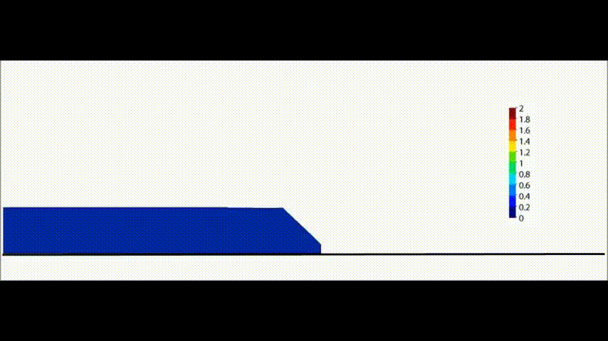
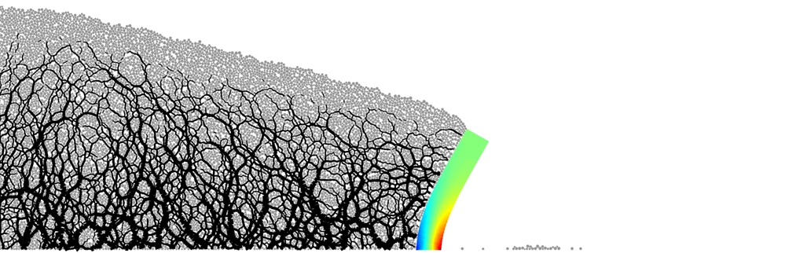

Education
- Sep.2014 - Sep.2017, Ph.D. in Civil Engineering, the University of Newcastle, Australia
- Sep. 2011 - June. 2014, Master in Safety and Engineering, Central South University, China
- Sep 2007 - June 2011, Bachelor in Safety Engineering,Henan Polytechnic University, China
Experience
- 2024 - Present, Nanchang University, Professor
- 2019 - 2024, Luleå University of Technology, Sweden, Researcher and Lecturer
- 2018 - 2019, Central South University, Lecturer
Research Grants
- 2024-2026 National Natural Science Foundation of China project, Numerical Analysis of Geotechnical Engineering and Disaster Risk Prevention and Control, 3 million RMB, Principal Investigator
- 2023-2027 EU Regional Cooperation Project, CA22132, Joint Development Plan for Discrete Element Numerical Simulation (COST Actions ON-DEM), 970,000 RMB, Principal Investigator
- 2022-2024 Australian Research Council Discovery Project, DP220103381, Risk Assessment Method for Fractured Rock Slopes, 2.36 million RMB, Co-Investigator
- 2017-2020 National Natural Science Foundation of China General Project, 51679117, Simulation and Risk Assessment of Progressive Failure Processes in Fractured Rock Slopes Based on Contact Dynamics, 630,000 RMB, Co-Investigator

Instability of Rock Mass Systems

Collapse of Granular Materials

Simulation of Submarine Landslide Processes

Sensitive Clay Slope Landslide

Instability of Rock Mass Systems